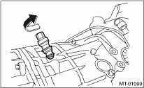

MANUAL TRANSMISSION AND DIFFERENTIAL(5MT) > Vehicle Speed Sensor
1. Disconnect the ground cable from the battery.
2. Lift the vehicle.
3. Remove the front, center, rear exhaust pipes and muffler.
4. Disconnect the connector from vehicle speed sensor.
5. Turn and remove the vehicle speed sensor.
